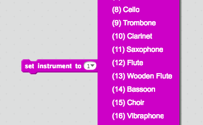

In this codelab, you'll make a two-player game in which you race up the screen, swerve around obstacles, and collect gems. There's no finish line so the winner is the player with the most gems when time runs out.
What you'll learn
Create a game loop on which the cars drive.
Use broadcastingmany times.
Create My Blocks for functions that multiple sprites use.
Practice cloning.
Use variables to show the game timer, keep track of scores, store player names, and move the game track.
How can we have the Game Loop sprite tell multiple sprites that we want to begin the game and set up the sprites to begin? Hint: it's what we learned about in class this week.
Steps
In the Game Loop sprite, have the script begin when the green flag is clicked.
Have this sprite [answer to the above question] a message called "setup" and wait (this is one block).
In the same sprite's code, begin a script for when this sprite recieves the setup message. What kind of block is this?
As you saw in the example project, we want our road and cars to both move, and we have a timer counting down how much time remains in the game. Create the following three variables: "RoadY," "CarSpeed," and "Countdown."
RoadY will keep track of the y coordinate used to position the moving scenery.
CarSpeed will set how quickly the cars move around the stage.
Countdown will keep track of how many seconds are remaining in the game.
Uncheck the RoadY and CarSpeed variables so that they don't show on our stage.
Initialize (set) the variables to the following values: RoadY to 0, CarSpeed to 5, and Countdown to 20.
We want the Countdown to keep track of the time in the game, so let's reset the timer immediately after we initialize the Countdown variable.
Add two blocks in this step: the first one should be a loop that repeats until the Countdown variable is less than 1; the second should be a message that says "game over" so we can tell all of the sprites when the game ends. The "game over" message should only broadcast after the Countdown reaches 1 or less.
Create a message called "calculate" and wait.
Still in the Game Loop sprite, add a segment of code for when it receives "calculate". Add the following elements in this section. Here we will calculate the position of the road each time that the game loop runs.
Create a variable called "RoadSpeed" that will store the speed of the moving scenery. Make sure this is not visible on the stage (uncheck it). Set this variable to the value of -5 in the script.
You will need to change the RoadY variable by the new RoadSpeed.
Check to see if the value of RoadY is less than -360, and if it is, change the value of that variable by 720 so that it goes up to 360 and repeats itself. (You will see this later, but this is because the road is split into two sections, which are at a distance of 360 from each other along the y axis.)
Before we move on to other sprites, create a message called "move" and wait. This is the last time we will touch this sprite for a bit.
On this page, we will get the roads to move the way that we set up in the Game Loop sprite.
Steps (in the Road1 sprite)
When this sprite receives the setup message, have it prepare for the game with the following code:
This sprite should go to the position (0, 0) (where the first number is the x coordinate and the second is the y coordinate).
This sprite should go backwards 10 layers so that it fills the stage.
When it receives the move message, it should go to (0, RoadY), where RoadY is the variable we made when we were working on the Game Loop sprite.
At this point, if you press the green flag, you'll see that only half the road moves down the screen. Let's do the other half now.
Steps (in the Road2 sprite)
Repeat step 1 from the Road1 sprite, except set the y coordinate to be 360 instead of 0.
Now we'll work on the code to make Road2 start to move. When it receives the move message, we need to figure out at what position it should be. This position is conditional.
If the value of RoadY is less than 0, then Road2 should go to (0, RoadY + 360).
Otherwise, Road2 should go to (0, RoadY - 360).
Now if you run the script, you should see the road scrolling smoothly.
Let's make this game a bit more interesting - we're going to make the RedCar work.
Set Up the Car
This sprite will also receive the setup message that was broadcasted by the Game Loop sprite. When it does, the following will happen:
The sprite will show itself and it will go to the front layer.
It will position itself (go to) the coordinates (-40, 0) and point in direction 0.
You will need to create a variable for this sprite only called "spinning" that will keep track of how much the RedCar is spinning at a given time. Set "spinning" to be 0 (this means that the car is not moving).
Functions
In programming, a fuction is a named section of that program that performs a specific task. In this sense, a function is a type of procedure or routine.
Car Controls
You will need to create a few functions for this game, all of which are for the cars.
Create a function using My Blocks called "car controls" which will be used to add keyboard controls for the cars to move.
To make the car drive straight, make sure that it's pointing in direction 0.
Let's make the car controlled by the W, A, S, and D keys where A and D rotate the car and W and S speed up and slow down the car (touching nothing will make it drive straight):
If the D key is pressed, the car should point in direction 30 (turns to the right) and change its x coordinate by the CarSpeed (makes the car move sideways).
If the A key is pressed, the car should point in direction -30 (turns left) and change its x coordinate by -CarSpeed (you can make it negative by using the subtraction block in the Operators section and doing 0 - CarSpeed).
If the W key is pressed, the car should change its y coordinate by CarSpeed (it will move faster up the screen).
If the S key is pressed, the car should change its y coordinate by the RoadSpeed (it will look like it's stopping because it will move down at the same speed as the scenery).
Make the RedCar perform the actions of this function by calling the "car controls" block after the RedCar receives the "move" message. If you run the program, you can see how the car moves with the W, A, S, and D keys.
Like in real life, the cars in this game will drive inconsistently when they hit snow... more specifically, they will spin!
Steps
Let's use what we learned on the last page to make a "check collisions" function. This function should check if the car is touching either Road1 or Road2 and set the spinning variable to 30 if it is. Setting "spinning" to a value tells the car how long to spin for. This step detects if the car has run into snow.
Now to make the car spin: make a "spin" function. In this function, we want the car to both spin and to stop; here's how we'll approach it:
The car should turn 30 degrees on each "spin," so every time that it turns, the spinning variable should decrease by 1 (go down by 1). It should change its y position by the RoadSpeed so it looks like it is stopped on the road.
To stop the car, we need to check that the value of spinning is 0 and then have it go to the position (-40, -180) and point in direction 0. This makes it go to the bottom of the stage and point forward.
Put It All Together
Let's go back and modify the script for when the RedCar receives "move" to reflect the unfortunate consequence of hitting snow. We will make it so that you can only control the car if the spinning variable is zero. Instead of running only the "car controls" block, check if the "spinning" variable is 0, and if so, run the "car controls" and the "check collisions" block... if not, "spin"!
Once you have a working band, there are a lot of other features you can add to make it better!
Scratch lets you change the instrument that plays the notes. Use this to add instruments to your band.

Add more colors and sounds
Add a drum beat that goes the whole time
Think of your own improvement!
When you're finished, be sure to save and share your project, and then add it to the studio here .